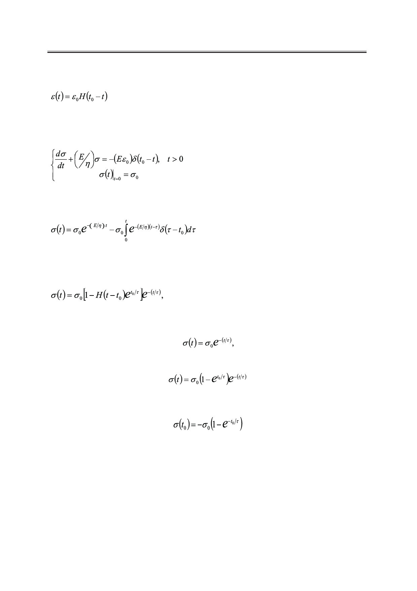

Новые функциональные соотношения для линейных реологических моделей Максвелла
и Кельвина-Фогта
Имеем:
, t > 0.
(11)
Уравнение (6) относительно изменения напряжения σ(t) дает следующую задачу
Коши:
,
(12)
решение которой, согласно (5), имеет вид:
.
(13)
После вычисления интеграла по схеме, изложенной выше, находим соотношение, со-
держащее полную информацию об изменении напряжения при всех t > 0:
t > 0.
(14)
Для времени t < t0 имеем из (14):
при t > t0 напряжение
,
в момент времени t0 (t → t0+0) напряжение равно величине
.
Модель Кельвина-Фогта в отличие от модели Максвелла учитывает упругость, от-
личную от гуковской, которая возникает в полимерах за счет развертывания макромоле-
кул. В этой модели упругий и вязкий элементы соединены параллельно, как это показано
на рис. 4. Деформация такой модели является общей для обоих элементов, а напряжение
складывается из напряжений в каждом элементе:
σ = σ1 + σ2.
Дифференциальное уравнение для этой модели имеет вид:
56
Российский технологический журнал 2017 Том 5 № 5